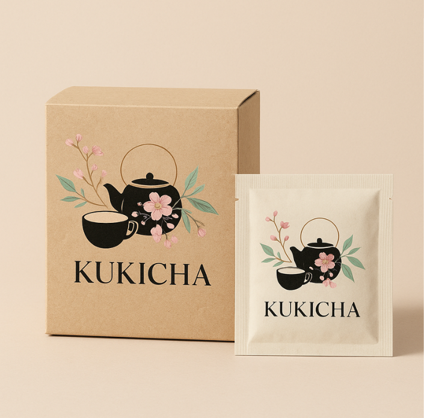
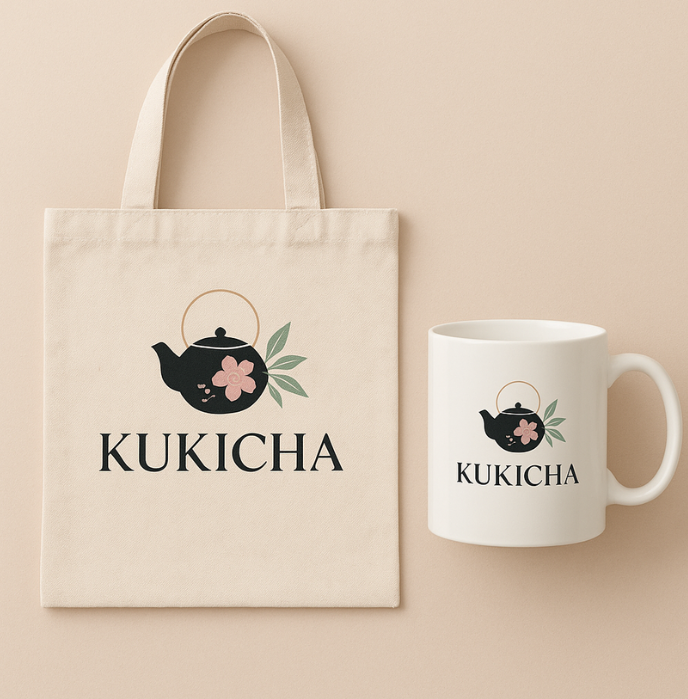
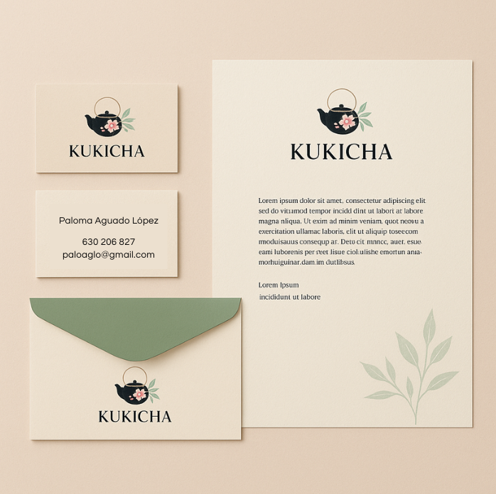
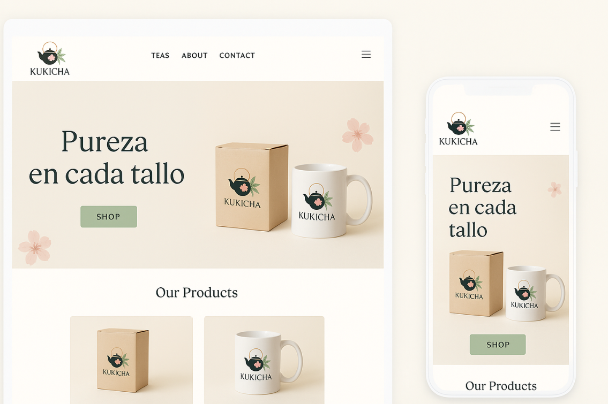
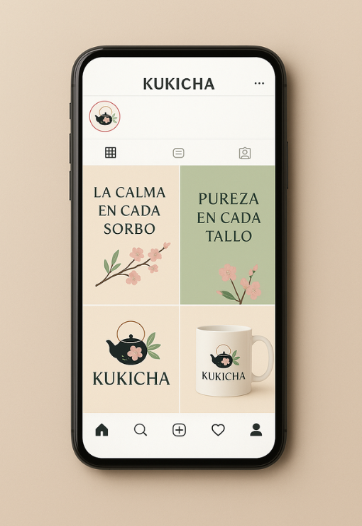

Identidad de Marca / 2025
Kukicha
El Concepto
Kukicha es una marca de té japonés que celebra la simplicidad. El diseño se basa en la honestidad de los materiales y una paleta cromática extraída directamente de la naturaleza: tierras y hojas secas.



